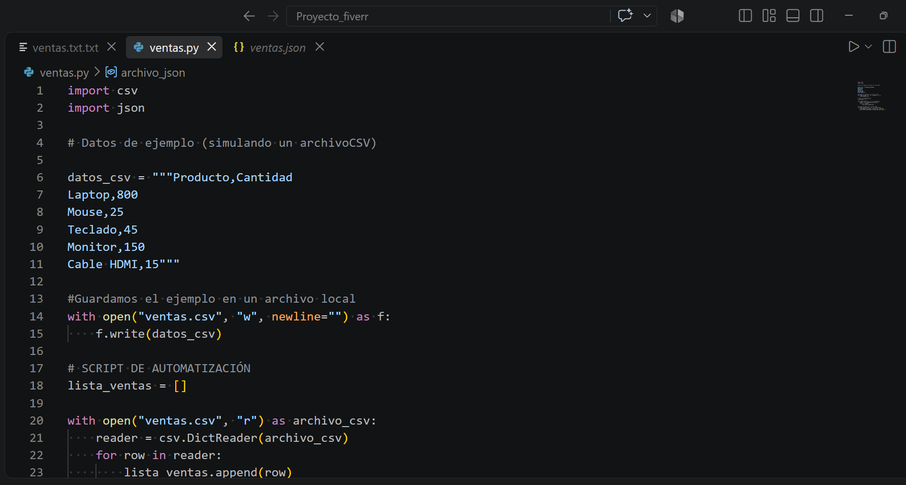
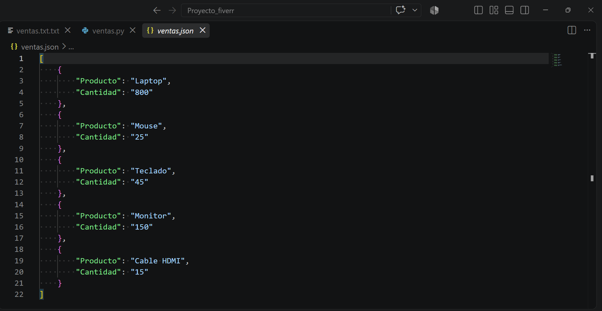
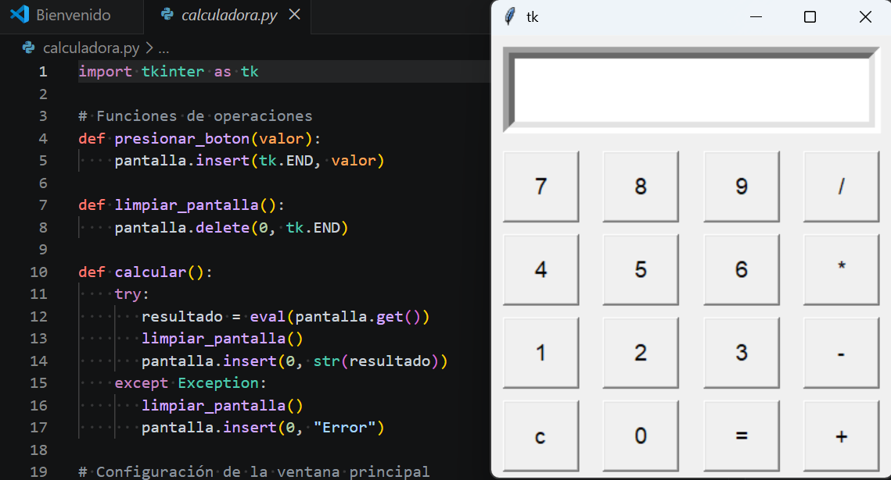
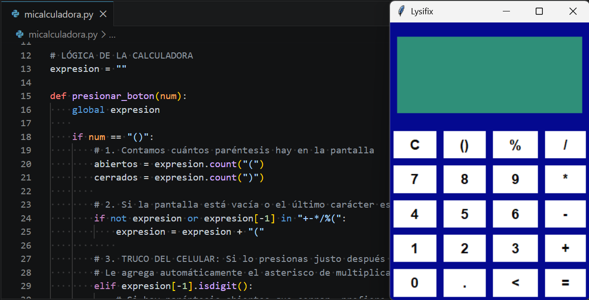
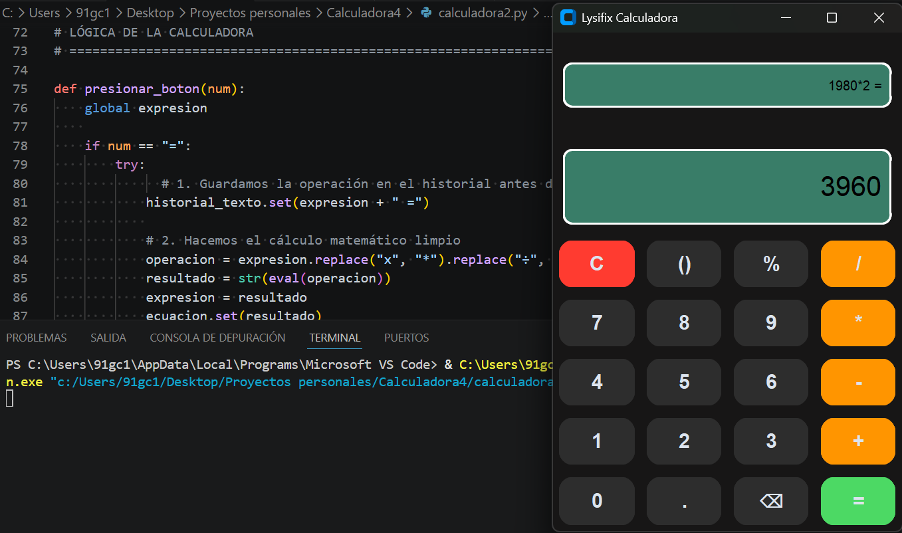
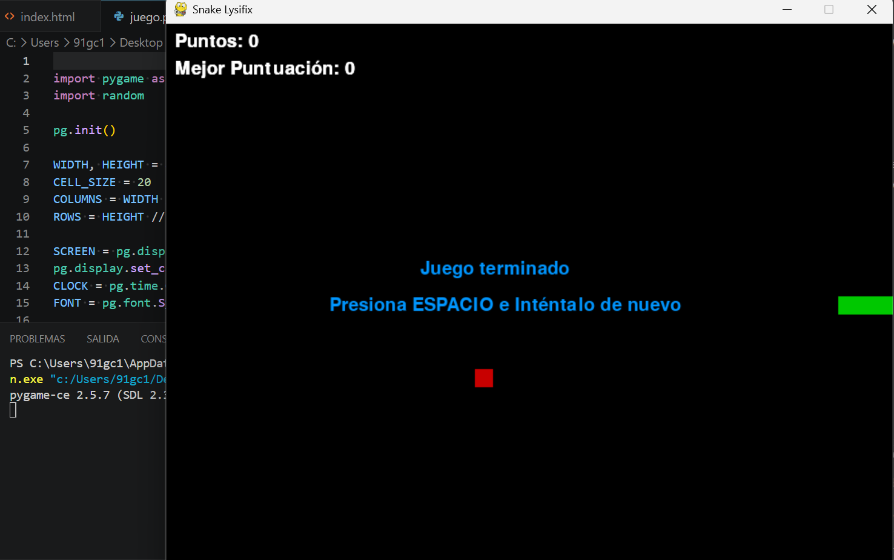
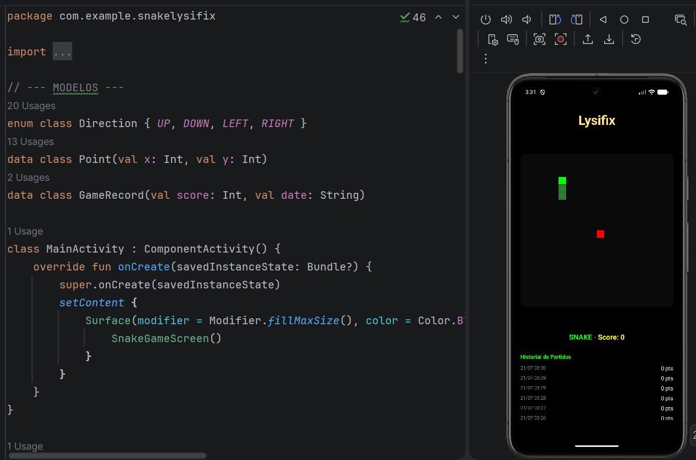
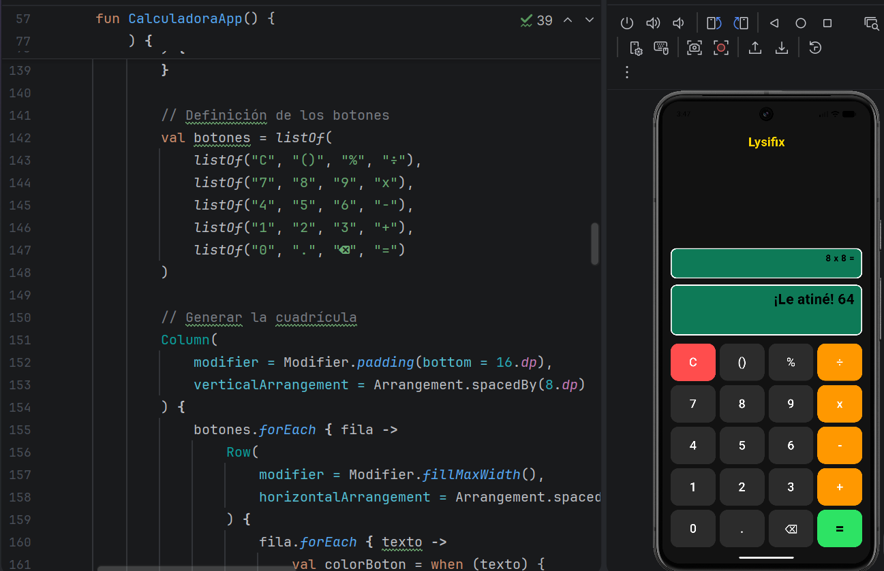

Script Automatizado
Conexión y manipulación automática de formatos de archivo.
- Elimina tareas repetitivas de copiado y pegado
- Extraer información de múltiples facturas JSON
- Unificar reportes mensuales de Excel
Lysifix
Web, software y experiencia digital
Diseño web y software a la medida para emprendedores y negocios que buscan un producto digital con estilo y propósito.
Hola, soy el desarrollador detrás de Lysifix.
Me dedico a desarrollar Scripts lógicos en Python. Me enfoco en ayudar a emprendedores, estudiantes y pequeños proyectos independientes a procesar datos, limpiar y organizar sus archivos y resolver problemas específicos con herramientas sencillas a la medida.
Ahorra horas de entrada manual de datos, elimina por completo los errores humanos y entrega información limpia lista para usarse en cualquier aplicación web.
Lo que incluye tu proyecto:
Olvídate de sistemas complicados que requieren descargas o instalaciones pesadas. Creo plataformas que se abren directo desde el navegador.
Lo que incluye tu proyecto:
Diseño software práctico y visual que te ayuda a automatizar tareas, mejorar la productividad de tu equipo y administrar los datos de tu negocio de forma segura.
Lo que resuelvo por ti:
Creo páginas web y aplicaciones móviles modernas que se adaptan al ritmo de tu negocio. Sin instalaciones complicadas y listas para usar desde el navegador o el celular.
Lo que incluye tu proyecto:
Una selección de software y aplicaciones que demuestran mi capacidad técnica, lógica de programación y diseño funcional.
Ahorro de tiempo, cero tareas manuales y flujos eficientes.

Conexión y manipulación automática de formatos de archivo.

Script limpio, estructurado y documentado en Python listo para ejecutar.
Herramientas pensadas para productividad, entretenimiento y una experiencia visual más cercana a un producto profesional.

Una primera versión funcional, sencilla y directa, pensada para mostrar la base lógica del proyecto desde el inicio.

La transición a una experiencia más visual, con botones interactivos y una identidad más clara para la herramienta.

Una herramienta elegante con lógica refinada y una interfaz que se siente cercana a una app de escritorio real.

Un proyecto con base de juego, movimiento fluido y una propuesta visual que puede evolucionar hacia un producto completo.
Un vistazo a las aplicaciones y herramientas que he construido desde cero.

Una versión de Snake con actitud, donde cada giro se siente más rápido, más divertido y un poco más caótico de lo que debería.

Una idea de app con un toque chistoso y muy útil, donde las cuentas salen rápido y el diseño se siente más vivo que una calculadora normal.
Para tu total tranquilidad y la mía, utilizo Fiverr como mi plataforma oficial de facturación, gestión de pagos y entregas.
Si buscas crear una página web, lanzar tu app móvil o renovar la presencia digital de tu negocio, estoy listo para ayudarte a dar el siguiente paso. ¡Escríbeme y lo revisamos!
Para garantizar la máxima seguridad en el manejo de contratos y entregas de código, toda la gestión y contratación final se realiza exclusivamente a través de plataformas certificadas.